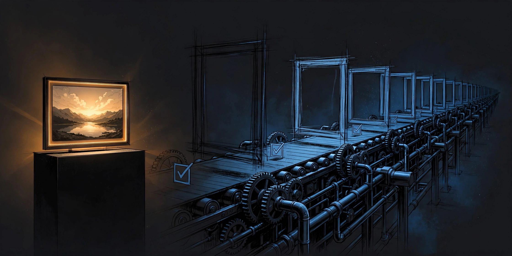

One Finished Video Is a Demo. A Daily Pipeline Is the Product.

I finished my first YouTube Short this week. Fifty-three seconds, vertical, a Korean restaurant job-hunt story. It took a v1 and a v2 to get there.
And the moment it was done, I realized something uncomfortable: the video wasn't the win. The win was everything around it.
Let me explain.
The v1 that nobody will see
The first version of the short was fine. It said what I wanted to say. But "fine" is where videos go to die — nobody can tell you what's wrong with "fine," so you just feel vaguely uneasy and move on.
So I made a rule: no version ships on the first cut. The v1 exists to show me what the v2 should fix. The thumbnail gets the same treatment — headline on top, punchline on the bottom, checked against the title so they complement instead of repeat.
That checklist — draft, record, revise, thumbnail, title, one line on "what's next" — is now a file. Not in my head. A file. Because the version in my head gets skipped on tired days, and the version in a file doesn't care how I feel.
The machine that drafts while I sleep
Here's the part that changed the math. Every morning at 9:20, a scheduled job drafts the next short: topic, hook, thumbnail copy, a 30-to-45-second script. I don't open a blank page. I open a draft and decide: proceed or hold.
That distinction — deciding versus doing — is the whole game.
A blank page asks you to be creative on demand. A draft asks you to be a judge. Judging is cheaper than creating, and it's a skill that doesn't depend on motivation. Some mornings I'm sharp and I rewrite the whole thing. Some mornings I just say "proceed" and the machine already did 80% of the work.
Solopreneurs don't fail at quality. They fail at continuity. The graveyard isn't full of bad videos — it's full of good creators who made three videos and stopped. The pipeline is what keeps you from becoming one of them.
Decide once, execute daily
Every blank you leave is a decision you'll make at runtime, when you're tired and biased toward skipping. So I decide once:
- The slot is fixed: one draft every morning, 9:20.
- The format is fixed: hook in the first three seconds, one idea per short, thumbnail copy top and bottom.
- The bar is fixed: v1 never ships; every short gets a second pass.
Then the daily run is execution only. No "should I make one today?" — the draft is already there. No "what should it be about?" — the topic bank has five spares. The only question left is "proceed or hold," and that's a one-word decision.
This is also how I run my AI now. A while ago I told it to "work without rest." It pushed back — politely — and said restlessness without an engine is just an empty promise. So we built the engine into the schedule itself: every run prepares the next action in decision-ready form, flags what's blocked with an alternative, and only pings me when my decision is the bottleneck. Same principle. Decide the shape once; let the machine run the shape daily.
A demo impresses. A pipeline compounds.
One finished video is a demo. It proves you can do it once. Nobody builds a channel — or a business — on once.
A daily pipeline is the product because it's the only thing that compounds. Video 1 teaches you the checklist. Video 10 teaches you the audience. Video 50 teaches you the format you were actually meant to make, which is never the format you started with. None of that happens if you stop at the demo.
There's a failure mode here, and I want to name it honestly: a pipeline without a quality bar is just a spam machine. Daily output of "fine" is worse than weekly output of "good," because it trains your audience to skip you. That's why the v1-never-ships rule exists. The pipeline gives you volume; the second pass gives you the standard. You need both, and they protect each other — the pipeline protects you from quitting, the standard protects you from coasting.
Build the pipeline, then trust it
If you're a solo operator, here's the practical version:
- Pick one slot and defend it. Mine is 9:20 AM. Yours can be anything. Fixed beats optimal.
- Write the checklist down. Every step you do twice belongs in a file, not in your head.
- Never ship the first cut. The v1 is a mirror, not a product.
- Separate deciding from doing. The draft arrives; you judge. One word: proceed or hold.
I started this channel to document the process, failures included. So here's the honest status: one video finished, a daily draft machine running, and a pipeline that's worth more than both. The demo is done. Now the product has to earn its name — one morning at a time.
← All posts